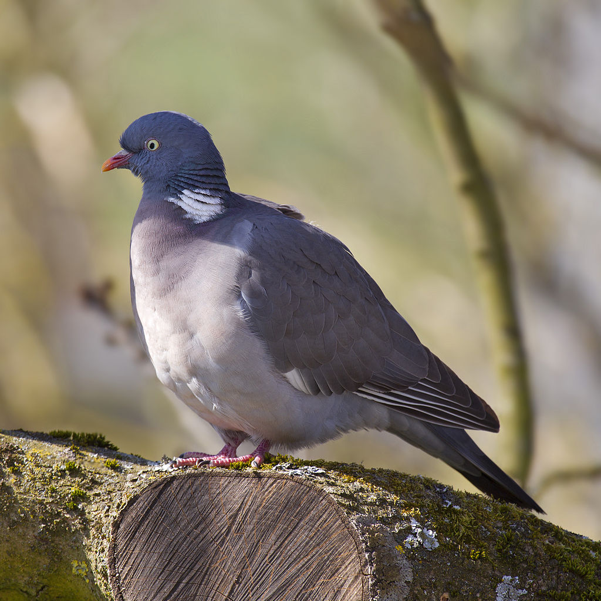

Les pigeons ramiers mesurent de 40 à 42 cm de long et leur envergure se situe autour de 75 à 80 cm.
Le poids d'un ramier peut varier entre 460 et 570 grammes. Le plumage est de couleur bleu clair
grisée; le cou est orné de couleurs blanches, vert sombre et pourpre. Finalement, le poitrail passe
d'un rose pâle vers le blanc.
Un pigeon qui s'envole.

Le comportement
Le pigeon ramier est très grégaire. Il aime vivre en groupe avec ses semblables. Ceci créer un effet
de masse qui l'aide a se proteger des predateurs comme l'autor.
Son alimentation se constitue essentiellement de feuilles vertes, baies, bourgeons, fleurs, racines
et de graines.
Pendant son picorage, les individus dominants se retrouve au centre et se nourissent plus rapidement
que les autres.